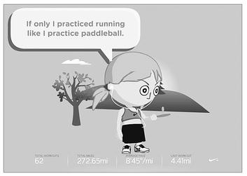

Nike+
耐克 +
Let’s consider the gamelike Nike+ (or “Nike plus”) running system, a motivational platform that is wildly popular among people who already love to run—especially those who want to run farther and faster.
Nike+
Stats! Stats! It got me out of bed to run this morning cuz I need BETTER STATS. It’s real world achievement points! Who else will play with me? I seek challengers!9
9
—Message board post from a new Nike+ runner
The very first time I went running with the Nike+ system, I ran faster than I had in my entire life.
I was running my favorite route, a four-and-a-half-mile course in the Berkeley Hills. In six years, running it a couple times a week, I’d never once finished faster than 41:43. But on my first Nike+ run, I clocked in at 39:33, more than two minutes ahead of my all-time personal best. How in the world did I suddenly get so much faster? It’s no mystery: I was motivated by better, real-time feedback and by the promise of online rewards when I got home.
Running, of course, is its own reward. You feel the endorphins, you clear your mind, you build stamina, you burn calories, you get stronger. But it’s also a struggle—to find the time, to convince yourself that you have the energy when you’d rather sleep late, to go out whether it’s hot or it’s raining, and to fight off boredom doing a highly monotonous activity. Runners love running, but motivation is still an issue. So Nike+ is designed to provide an added layer of intrinsic motivation, beyond the runner’s high and the physical results.
If you’ve never seen it in action, here’s how Nike+ works. An inexpensive sensor—it costs about twenty dollars and is smaller than a poker chip—fits imperceptibly inside the sole of almost any standard Nike sneaker. It’s activated by movement (thanks to an accelerometer) and communicates with your iPod (via radio transmitter) to tell you exactly how fast you’re running and how far you’ve run. As you’re running, presumably to your favorite music, the iPod screen displays your stats in real time.
Getting feedback in real time makes a huge difference when it comes to running faster and longer. Just being able to see when you’re slowing down—something that happens unconsciously as you tire or lose focus—helps you bring your attention back to your pace. Meanwhile, pushing yourself to run faster is instantly more rewarding, because you get to see the numbers drop lower and lower the faster you go. It’s one thing to set a time goal and try to reach it; it’s another thing entirely to know every step of the way if you’re running fast enough to achieve it.
When you get home, you can plug your iPod into your computer, and the Nike+ system will upload your data and add it to your running profile. That’s where the online rewards come in. Every mile you run earns you a point; score enough points, and you level up. There are six levels currently on Nike+, which follow the same color grading as martial arts belts: yellow, orange, and green; blue, purple, and black. Like any good MMO, you advance Nike+ levels quickly at first, but over time it takes more and more effort to reach the next level. Right now, I’m a level green runner, having logged 272 miles since joining, and I have 348 more miles to run to reach the blue level. That’s an intimidating number, but I’m so motivated to level up that I bet I’ll run the next 348 miles in even less time than I ran the first 272.
Based on the data the Nike+ sensor collects, you can also earn personal online trophies for best times and longest runs, as well as achievements for meeting training goals, like working your way up to a 10K distance or running a hundred miles in a hundred days. And when you’ve had a particularly good run, a famous athlete like Lance Armstrong will cheer you on before you even catch your breath, with a congratulatory audio message like this: “Congratulations! You’ve just recorded a personal best for the mile” or “Way to go! That was your longest run yet.”
You can keep your running profile private and your accomplishments to yourself—if you want. Or you can push your stats and achievements out to your Nike+ friends online, to everyone you know on Facebook, or even to the whole world on Twitter. Perhaps my favorite Nike+ motivational feature is the “power song.” It’s the musical equivalent of a health pack or a power-up in a video game. Whenever you need a boost of energy or extra motivation to keep running or pick up speed, you simply hold down the center button on your iPod. That quick gesture automatically triggers your favorite, preset running song. For me, pressing the center button during a hard run feels like I’m unlocking some secret super-running power that I didn’t even know I had. The faster pace, the pounding beat, the lyrics ringing in my ears like a personal mantra—it’s the one time in the real world I feel like I have the ability to summon the kind of magical powers that I’m used to deploying in virtual worlds.
Add all that up—real-time stats, a leveling system, personal achievements, and your own personal power-up song—and Nike+ makes for a very good running game, one that uses better feedback and reward to help you put in a better effort and aspire to more than you would otherwise. But why play alone when you can play with others? It’s the online community built around the Nike+ system that turns it into something really spectacular: not just a running game, but a massively multiplayer running game.
The Nike+ online community has more than 2 million active members, all of whom are collecting and sharing data about their runs in order to compete in challenges and contribute to team missions.
Anyone can design their own challenge and invite whomever they want to play with them. It can be competitive—everyone tries to get the best score—or collaborative—you try to get all of the participants to successfully finish the challenge before time runs out. Challenges can be as small as a two-player rivalry—husband versus wife or brother versus brother, for example: Who can log the most miles in a week? Or they can be set up as a team event for a group of friends or coworkers, with a dozen, or twenty, or fifty runners, or more—one neighborhood races another, for example, or every department for itself: how many teams can collectively log a thousand kilometers before time runs out?
The challenges can also be public free-for-alls, with hundreds, thousands, or even tens of thousands of competitors. As I’m writing this, there are more than seven thousand user-created public challenges to participate in, including the collaborative individual challenge of “running around the earth,” in which each participant runs 24,902 miles—the challenge expires in the year 2027, making this ambitious goal seem a bit more reasonable—and a competitive team challenge for runners who go out with their dogs. (In this public challenge, players can join a team based on breed; out of fifty different teams, currently Labradors and beagles are leading the total mile count, followed closely by the mutts, but the Australian shepherds have the fastest pace.)
The challenge puts the runner’s personal goals into a larger social context, which gives each jog more meaning. Every run is adding up to something—and depending on what motivates me most, I can join challenges that stoke my competitive spirit or call on my sense of responsibility to my teammates.

My Nike+ Mini trash-talks me.
(Nike Corporation, 2009)
Of course, no good MMO would be complete without an avatar. Nike+ is no exception. When you join the Nike+ community, you get to create a “Mini,” officially described as your “tiny running partner,” whom you can customize to look just like you. Your avatar’s energy level and animations are based on your run activity: how far and how often you run. If you’ve put in a few good days in a row, your Mini is ecstatic and bouncing off the walls. If you’ve slacked off for a week or two, your Mini pouts and mopes and gently teases you for being such a slacker. Just a few days ago, my Mini was making faces at me and saying, “If only I practiced running like I practice paddleball.”
Your Mini greets you whenever you log in to Nike+, you can embed it into your Facebook profile or blog (so others can see your avatar), and you can even download a screen saver starring your Mini at play (so you have to come face-to-face with your avatar even when you’re not thinking about running).
Recent research suggests that this kind of ambient avatar feedback is remarkably effective. In a widely cited experiment conducted at Stanford University’s Virtual Human Interaction Lab (VHIL), researchers demonstrated that watching customized, look-alike avatars lose or gain weight as we do exercise makes us work out longer and harder.10
10 Participants who received “vicarious reinforcement” from their avatars volunteered to do on average eight times more exercise repetitions than participants without avatar feedback. That bodes well for the potential use of Mini-like avatars at home or at gyms, where people are more likely to work out in front of screens. (And, in fact, many home fitness games, including Wii Fit and EA Sports Active, use avatar feedback to engage players in harder workouts.)
But there’s no reason that people working out need to be stuck in front of a screen to get the benefit of avatar feedback. In another experiment, Stanford VHIL researchers discovered that simply showing subjects a short animation of their look-alike avatar running in the laboratory inspired subjects to spend on average an hour more running in the first twenty-four hours after they left the laboratory. (There was no motivation effect watching a random avatar; it worked only when the avatar was highly customized to look like the subject.)
The researchers theorized that seeing virtual versions of themselves doing a positive activity stimulated memories of the subjects’ own real-life positive experiences, making them more likely to reengage in the activity. They were careful to note in their findings that participants in the study, all college-age students in northern California, were generally healthy and fit. There was no evidence to suggest that someone who hates running would be likely to run for an hour after seeing their avatar do it. The avatar reinforced positive feelings about running, rather than creating them from scratch.
Yesterday, after my first run in a couple of weeks, my Mini danced around my iPod smiling, saying, “I can hardly contain myself! I’m a running machine !” Today, after another run, she’s leaping over hurdles and shouting, “I can do anything! I feel amazing!” I have to admit—the animations are a fairly accurate depiction of my own inner runner. It’s definitely working the way the Stanford researchers theorized it should: my Mini reminds me of why I love to run and therefore makes me more likely to get out of the house and do it.
But there’s also something else going on. I find that I want to run more in order to make the Mini happy.
Though it might seem ridiculous, this kind of emotional connection happens in games all the time—especially in tending and caretaking games, like the Xbox Viva Piñata series, in which players have to support an ecosystem of “living,” wild-roaming piñata animals, or the Nintendo Pikmin series, which puts the player in charge of an army of eager-to-please but dumb and highly vulnerable creatures. MIT researcher Judith Donath has studied the emotional attachment we form to virtual creatures. She argues that game characters programmed to appear dependent on us for their well-being provoke a hardwired human desire to nurture and care for them, and it doesn’t hurt that they are cute, helpless creatures. “Time spent playing with them feels like care-taking, an act of responsibility and altruism,” Donath explains. “We develop empathy for them and become invested in their well-being.”11
11 Naturally, then, the happier our virtual creatures appear to be as a direct result of our actions, the more satisfied we are as effective caretakers.
Virtual-creature happiness is not nearly as obvious a feedback system as points, levels, and achievements. But it’s part of a larger potential field of reward innovation, as we continue to learn how to better motivate ourselves by applying the best design strategies of games to our real-life activities.
THE MORE we start to monitor and self-report our daily activity, whether through GPS, motion sensors, biometric devices (to track heart rate or blood sugar levels, for example), or even just with manually entered status updates, the more we’ll be able to chart our progress, set goals, accept challenges, and support each other in our real lives in the way we do in our best games. Given the overwhelming success of the Nike+ system, it’s not difficult to imagine adopting some of the Nike+ strategies for other activities that we want to do faster, more often, or simply at a higher level.
I for one would have loved a Writing+ system while writing this book. I’d have a “mini” writer whose mood and energy was based on my daily word count. I’d have the opportunity to earn achievements, like showing up to write ten days in a row, or to set a personal best for most words written in a day. The system could also keep track of the complexity of my writing—how many words I use per sentence, and how many sentences per paragraph, for example. I could use this data to improve the clarity of my writing and vary its structure. I could set up friendly rivalries with other authors—both friends in real life and authors that I’m a fan of. I think I would have been a lot more inspired to write if I knew I’d be able to compare my daily writing stats against the real-time stats of my favorite fiction writers—Curtis Sittenfeld, Scott Westerfeld, Cory Doctorow, and Emily Giffin.
Any project or challenging hobby that we’re working on that we want to see through to completion would benefit from more gamelike feedback and ambient support. We may be looking at a future in which everything we do can be “plus”: Cooking+, Reading+, Music+.
Maybe even . . . Social Life+?
That’s the idea behind Foursquare, a social networking application designed to motivate players to lead a more interesting social life.